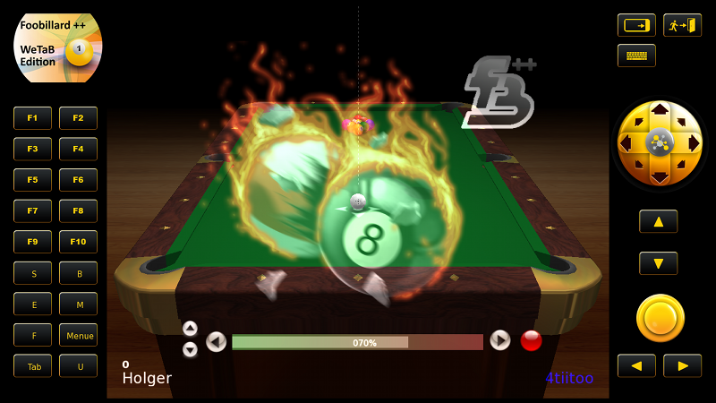
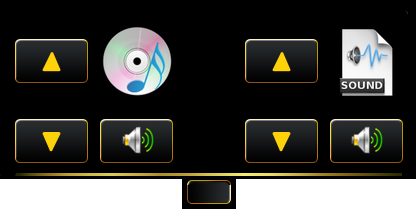
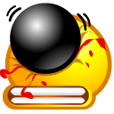
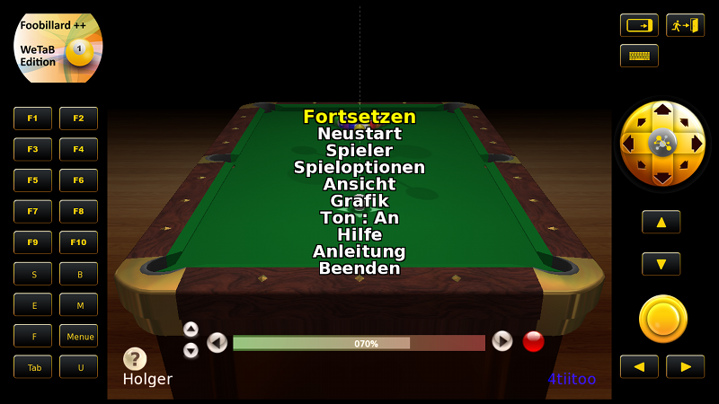
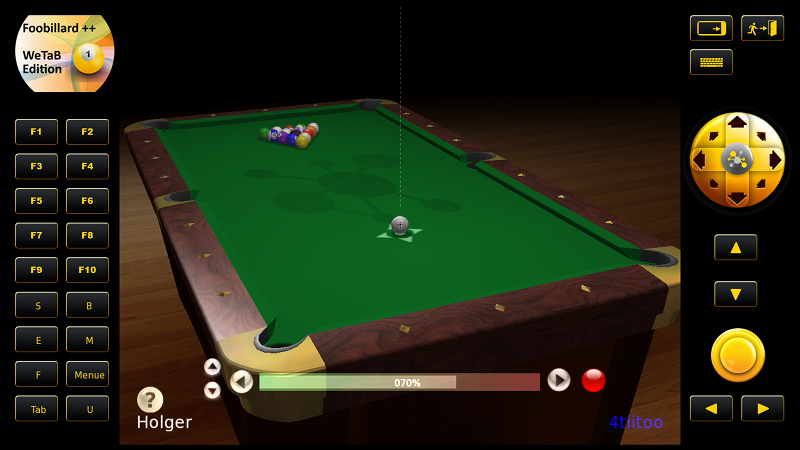
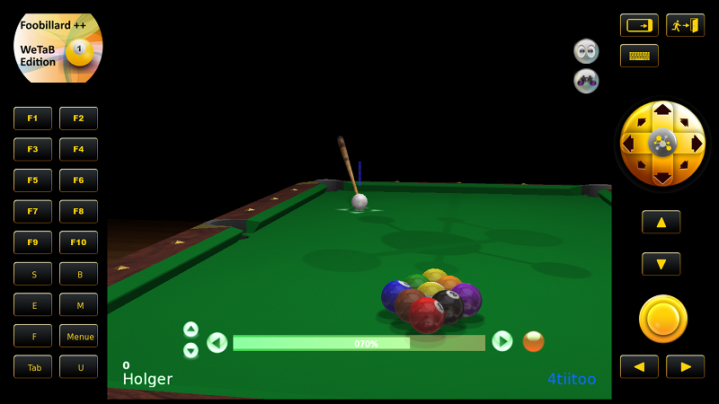
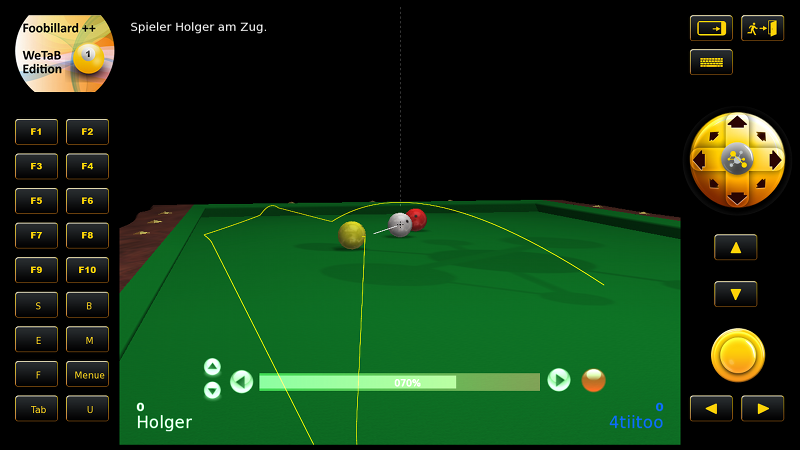
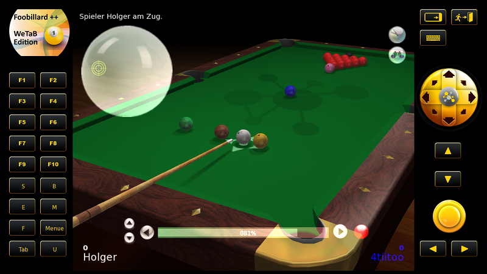

Foobillard ++ WeTab Edition
Foobillard ++ WeTab Edition
5.1 Klassisches 8 Ball (Kneipenvariante)
5.4 Snooker (einfachste Variante)
Vielen Dank, dass Sie sich für Foobillard++ entschieden haben. Foobillard++ ist ein Billardspiel in OpenGL, welches auf das ursprünglich von Florian Berger programmierte Foobillard V3.0a beruht. Foobillard zeichnet sich insbesondere durch eine hervorragende praktisch unerreichte Ballphysik aus. Im Laufe der Jahre sind viele Änderungen und teils auch Erweiterungen in Foobillard von vielen unterschiedlichen Programmieren eingepflegt worden. Die Pflege des ursprünglichen Programms wurde jedoch leider eingestellt, sodass es bei der letzten nicht ganz fertiggestellten Version aus 2007 verblieb. Mit Foobillard++ wurde die weitere Entwicklung und Erweiterung durch Holger Schäkel wieder aufgenommen. In der hier exklusiv für das WeTab erstellten Version erhalten Sie Zugriff auf die neueste Entwicklung des Billardspiels. Eine auf Fingerbewegung optimierte Steuerung und auf Wunsch einiger Tester mittels des WeTab eigenen Gameframe auch mit der WeTab typischen Daumenbedienung. Es wurde viel Wert darauf gelegt, dass Programm mit nur einer Fingergeste bedienbar zu machen. Die gesamte Steuerung ist jetzt realistischer (optimierter Queue-Fingerschuss), alle Spiele sind nunmehr turnierfähig, weitere bildschirmorientierte Steuerung auf dem Touchscreen, realistische Schläge auch über andere Kugeln hinweg, neuer Anschneidemodus, mehr Ton, neue Optionen, Grafikoptimierungen, Anzeigen im Spielablauf und viele Fehlerbehebungen. Eine WeTab spezifische Bluetooth und eine Netzwerkunterstützung bis inkl. IPV6 für Mehrspielermodi ist in Arbeit. Ebenso wird an einer teils neuen Regelbehandlung innerhalb der einzelnen Spielmodi gearbeitet.
Das Spiel unterstützt derzeit einfache Varianten von 8 Ball, 9 Ball, Karambol und Snooker.
Foobillard begann als Open Source Projekt unter der GPL. So ist es auch mit Foobillard++. Es ist ein freies Programm, keine Kosten, keine versteckte Werbung. Dafür aber auch keine Garantie, dass das Programm Ihren Wünschen voll entspricht.
Bei der Realisierung des Spiels für das WeTab wurde ein besonderes Augenmerk auf möglichst ruckelfreie Animation und Akkueinsparung gelegt. Bitte haben Sie Verständnis dafür, dass dem Anspruch nicht durchgängig gerecht wurde. In besonders hohen Zoomstufen kommt es bei der Darstellung der Kugeln zu ganz leichtem Ruckeln. Die Leistungskraft des WeTab reicht durchaus aus, um die Animation auch dort ruckelfrei darzustellen oder die Kugeln mit mehr Glanz, Blending-Funktionen und Vertex-Shader darzustellen. Der Nachteil ist, dass dadurch -wie bei jedem akkubetriebenen System- die Leistungsabforderung an das Akku exorbitant ansteigt.
Nach Programmstart sollte nachfolgender Bildschirmaufbau erfolgen. Die Introsequenz können Sie durch einen Fingerdruck auf das Touchdisplay unterbrechen. Die im Hintergrund redenden Personen verstummen dadurch jedoch nicht. Auch das virtuelle Hinsetzen braucht eben etwas Zeit. Unmittelbar nach Start befinden Sie sich bereits in einem beginnenden Spiel. Die Art des Spiels und wer den Eröffnungszug im Spiel durchführt hängt davon, in welchem Spielmodus Sie das Spielprogramm beendet haben. War das letzte Spiel ein Karambol im Turniermodus, so startet das Programm beim nächsten Mal auch wieder mit Karambol. Beim allerersten Start des Programms wird ein 8Ball Spiel im 1 Spielermodus gestartet. Der erste Spieler sind Sie und Spieler 2 ist das WeTab. Als Namensangabe erfolgt der bei Installation des WeTab angegebene Benutzername für Spieler 1 und für Spieler 2 4tiitoo. Die Spielstärke des WeTab ist auf Mittel voreingestellt. Alle diese Einstellungen, sowie Startreihenfolge können Sie in den Menüs verändern und abspeichern.

Bild 1 (Programmstart)
Die einzelnen jeweils am linken und rechten Bildschirmrand befindlichen Steuerungselemente sind für die Daumensteuerung vorgesehen. Ein Ausblenden ist nicht möglich. Alle hier dargestellten Bedienmöglichkeiten können auch per Fingerbewegung im Spielfenster durchgeführt werden. Darauf wird später noch näher eingegangen. Das Spielfeld befindet sich in der Mitte und kann mittels Einsatz nur eines Fingers vollständig bedient werden.
Das Spielfeld hat an dem linken, rechten und oberen Rand kleine Einblendungssymbole. Bei Druck mittels linker Maustaste auf eines der Symbole werden Scrollmenüs ein- bzw. ausgefahren. Der Einfachheit halber erhalten die Scrollmenüs links und rechts den WeTab-typischen Namen "Daumenleiste".

Das hier beispielhaft dargestellte obere Scrollmenü zeigt die darüber erreichbaren Schaltflächen für die Musikausgabe (links) und die Tonausgabe (rechts) auf.
In der linken Daumenleiste befinden sich die Aktionstasten. Die Aktionstasten dienen hierbei zur Einleitung von besonderen Steuerungsmodi (S, B, E, M, F, F3, F6, F9, Menüaufrufen (Menue), Hilfe (F1 oder Logo), Neustart (F10) und Anzeigemodi (F2, F4, F8). Alle folgenden Symboltasten können Sie auch bei angeschlossener USB-Tastatur direkt auf der Tastatur eingeben.
Im Spielfeld können Sie je nach eingestelltem Modus (linke Daumenleiste) den Tisch in alle Richtungen schnell und komfortabel bewegen. Die Schlagstärke stellen Sie bequem durch Fingerdruck auf die Symbole und ein. Auf dem Stärkebalken in dem unteren mittleren Bereich verändert sich entsprechend die Länge der Anzeige und die Prozentzahl der Schlagstärke. Einen Schlag können Sie letztlich durch Fingerdruck auf das Symbol  auslösen. Mittels der Symbole und wird das gesamte Bild in den Grenzen der Darstellungsmöglichkeiten heran- oder weggezoomt. Ein Zoomen hat in einigen Schussfolgen durchaus Sinn, auch wenn diese Art des Spieles nicht unbedingt realistisch ist. Ein Schlag in der Queueansicht wird inkl. animierter Queue durchgeführt. Ohne Queueansicht erfolgt die unmittelbare Ausführung eines Schlages.
Bei der Bewegung müssen Sie berücksichtigen, dass eine Auf- und Abbewegung des Billardtisches auch immer eine Auswirkung auf die Schlaghöhe des Queue hat. Mittels der B Symboltaste kann die Höhe noch vor dem Schlag entsprechend eingestellt werden ohne das Sichtfeld dabei zu verändern. Die Schlaghöhe hat Auswirkung auf die Ballführung. Je höher der Ansatz, desto eher fliegt eine Kugel im Standardmodus der "realistischen Kugelbewegung" über andere hinweg oder sogar vom Billardtisch. Dieses Verhalten kann in den Optionen derart verändert werden, dass die Kugeln praktisch bei Bewegung auf dem Tisch "kleben". Dieses Verhalten ist das normale Verhalten des foobillard 3.0a gewesen. In der klassischen Einstellung hat eine Veränderung der Queue Höhenposition keine Auswirkung auf möglichen Kugelflug.
im linken oberen Bereich befindet sich die Statuszeile, die einige nützliche Hinweise zum Spielverlauf anzeigt. In manchen Fällen ist nicht klar ersichtlich, warum z.B. schlagartig der nächste Spieler den Zug erhält, obwohl vielleicht die richtige Kugel eingelocht wurde. Den Grund hierfür, können Sie der Ausgabe der Statuszeile entnehmen. Z.B. wurde zuerst im 8 Ball eine gegnerische Kugel angespielt oder aber die erste Kugel im Strafraum angespielt. Die Anzeige der Statuszeile kann in den Optionen an- oder ausgeschaltet werden.
Welcher Spieler am Zug ist, steht links unten im Spielfeld. Je nach gewählter Spielart ist hier auch die zu spielende Farbe zu erkennen:
8 Ball
= noch unbekannt
= halbe Kugeln
= Volle Kugeln
9 Ball
Welche Kugelnummer und Farbe als nächstes einzulochen ist.
Karambol
Erreichte Punktezahl
Snooker
Erreichte Punktezahl und die Information welche Kugel als nächstes einzulochen ist.
Im oberen Bereich der rechten Daumenleiste befinden sich die Standardsymbole des Gameframe. Hierauf wird nicht näher eingegangen, da sie zum Betriebssystem gehören.
Mit den Tasten des Steuerkreuzes werden die Pfeiltasten einer normalen Tastatur simuliert. Alle Steuerungen, die im Rahmen der Fingerbedienung im Spielfeld vorgenommen werden, können für alle daumenverwöhnten Anwender auch über das Steuerkreuz durchgeführt werden.
Als einzige Ausnahme gilt hier der Fingerschuss. Bitte beachten Sie dazu die Hinweise zur Symboltaste S in den Ausführungen zur linken Daumenleiste. |
|
| Diese Symboltaste leistet äquivalente Dienste wie das Symbol auf dem Spielfeld. Hiermit wird der sichtbare Bildausschnitt herausgezoomt. | |
| Diese Symboltaste leistet äquivalente Dienste wie das Symbol auf dem Spielfeld. Hiermit wird in den sichtbaren Bildausschnitt hineingezoomt. | |
| Die Ausführung eines Schlages wird ausgeführt. Auch diese Symboltaste hat die gleiche Bewandtnis, wie das Symbol auf dem Spielfeld. | |
| Einstellung der Schussstärke in negativen Schritten. Das gleiche erledigt das Symbol auf dem Spielfeld. | |
| Die Schussstärke wird erhöht. Wie Sie sichelich erraten haben, ist das äquivalent zum Symbol auf dem Spielfeld. |

Bild 2 (Hauptmenü)
Nach Auswahl von Menue über die linke Daumenleiste erfolgt die Ausgabe des Hauptmenüs wie im vorstehenden Bild gezeigt. Einige Menüpunkte haben eine sofortige Auswirkung und beenden das Menü wieder. Einige führen in weitere Untermenüs. In manchen Optionen können Daten direkt über die virtuelle Tastatur des WeTab eingegeben werden. Das können Sie daran erkennen, dass sich die aktivierte Aktion rot einfärbt. Dann ist in der rechten Daumeleiste das Symbol für die Tastatur aufzurufen. Soll keine Eingabe vorgenommen werden, können Sie den Vorgang über die Symboltaste Menue wieder abbrechen.
Bei Eingaben sind lediglich die Zeichen möglich, die zur erwartenden Funktion passen. Welche Eingaben zulässig sind, wird im weiteren Verlauf der Optionen noch bekanntgegeben. Bei einer aktivierten Eingabemöglichkeit ist der alte Eintrag erst mittels der Rücktaste bis zum Änderungspunkt zu löschen. Dann können wieder Zeichen eingeben werden.
Jedes Eingabefeld hat eine Maximal- und eine Minimallänge. Wird die Maximallänge überschritten, ist keine weitere Eingabe mehr möglich. Wird die minimale Eingabelänge unterschritten, kann der Eintrag nicht bestätigt werden.
Ist die Eingabe zum erwartenden Format (Zahlen, Buchstaben etc.) nicht korrekt, erfolgt eine akustische Mitteilung mittels einer Explosion.
Folgende Einstellungen können vorgenommen werden:
| Fortsetzen | Das beendet das Menü in den derzeit ausgewählten Einstellungen und hat die gleiche Wirkung wie die Symboltaste Menue oder aber ein Druck auf das Logo oben links.
|
| Neustart | Die gleiche Auswirkung wie die Taste F10 in der linken Daumenleiste. Das Spiel wird von vorne gestartet. Nähere Informationen dazu unter F10.
|
| Spieler | Hier können Sie Einstellungen zu den Spielern 1 und 2 vornehmen. Dabei handelt es sich um Namensvergabe, den Typ (Mensch oder 4tiitoo) und die Geschicklichkeit des Spielers. Eine Einstellung der Geschicklichkeit hat natürlich bei Ihnen als menschlichen Spieler keinen Einfluss. Allerdings wird bei einem menschlichen Spieler darüber eingestellt, mit welcher Geschicklichkeit ein Computer Schlagvorschlag durchgeführt wird. Als Geschicklichkeit stehen Hervorragend, Gut, Mittel, Ausreichend und Schlecht zur Verfügung. Die Standardeinstellung eines Computerspielers bei Erststart ist Mittel. Je größer der Tisch gewählt wird (höhere Turniergröße), je besser spielt der Computer bei gleicher Geschicklichkeitseinstellung.
|
| Spieloptionen | Es öffnet sich ein weiteres Untermenü und alle für den Spielablauf relevanten Optionen sind hier einstellbar. Dabei handelt es sich im Einzelnen um:
Spielart - 8Ball, 9Ball, Karambol oder Snooker
Je Spielart stehen die Varianten 1-2 Spieler Start, Turnier und Training zur Verfügung. Die Art des 1-2 Spielers ergibt sich aus den Einstellungen des Hauptmenüpunktes Spieler. Damit wird auch die Reihenfolge festgelegt. Daraus ergibt sich auch ein reiner Zuschauermodus, wenn beide Spieler auf Computer eingestellt sind. Im Karambolmenü gibt es eine Besonderheit. Entgegen allen anderen Spielen können Sie hier die Punkteanzahl festlegen, ab wann ein Spiel als gewonnen gilt. Standard ist 5. Einstellbar sind hier Werte von 1 - 100.
Im Turniermodus werden grundsätzlich 4 Läufe beginnend mit 16 Spielern durchlaufen. Die Zusammenstellung der Spieler ist rein zufällig und alle computergesteuerten Spieler weisen unterschiedliche Geschicklichkeitsstufen auf. Gestartet wird ein Durchlauf mittels der gelben Schusstaste auf der rechten Daumenleiste. Nach Ablauf aller Durchläufe wird der Turniergewinner ermittelt.
Tischlänge - 7, 8, 9 und 12 Fuß
Die Tischlänge kann zwischen den o. a. Größen in Fuß eingestellt werden. 7 Fuß ist die kleinste zulässige Tischgröße nach Turniernorm und 12 Fuß die eigentliche Turniergröße.
Steuerungsschalter - An/Aus
Dadurch kann die Anzeige der Steuerungsschalter , , , und auf dem Spielfeld an- und ausgeschaltet werden. Wer insgesamt die Daumensteuerung vorzieht, benötigt die Steuerungsschalter nicht.
Realistischer Kugelflug - An/Aus
Mit realistischer Kugelflug ist lediglich gemeint, dass Kugeln entsprechend den physikalischen Gesetzen nicht nur auf dem Spielfeld beweglich sind (Aus), sondern auch über andere Kugeln gespielt oder sogar den Tisch verlassen können (An). Auf Grund der doch von F. Berger ursprünglich erstellten sehr komplexen Berechnungsformeln (bishin zum Luftwiderstand und Reibung), war es bis zuletzt nicht gelungen, den Modus in foobillard 3.0a fehlerfrei zu integrieren. Seit foobillard++ ist das vorbei.
Fingerschuss - Neu/Klassisch
Wie der Fingerschuss letztendlich durchgeführt wird. Für genauere Erläuterungen zum Fingerschuss sehen Sie bitte unter den Erläuterungen zur Symboltaste S.
Auto freie Ansicht - An/Aus
Mittels dieser Option stellen Sie ein, wie nach einem durchgeführten Schuss wieder zum nächsten Schuss zurückgeführt wird. Bei An werden alle Einstellungen, wie Queueansicht oder aber freie Ansicht wieder zurückgesetzt, so dass Sie sofort mit der Einstellung zum nächsten Schuss übergehen können. Bei Aus bleiben die zuletzt eingestellten Ansichtsoptionen aktiv. Eine Queueansicht führt daher wieder zur Queueansicht zurück. Standard ist An.
Vogelperspektive Computer/Netzspieler - An/Aus
Hiermit legen Sie fest, in welchem Ansicht ein möglicher Netzwerkspieler (in Vorbereitung) und ein Computerspieler im Standard seine Schläge durchführt. Bei An wird automatisch in die Vogelperspektive gewechselt, damit Sie den Schlag des Gegners besser verfolgen können. Im ausgeschalteten Zustand erfolgt eine normale Anzeige. Standard ist ausgeschaltet.
Zeitraffer Turnier - Normal, Langsam, Mittel, Hoch und Sehr hoch
Die Geschwindigkeit, mit der Computerspieler ihre Züge durchführen. In der Stufe normal ist eine Echtzeitsteuerung aktiv. Mit jedem Stufe höher wird die Anzeige schneller. Bei sehr hoch kommt praktisch Schlag - Ergebnis in einem Atemzug.
|
| Ansicht | Ein weiteres Untermenü wird mit folgenden Einstellungsmöglichkeiten geöffnet:
Rot/Grün Stereo - An/Aus
Wenn Sie im Besitz einer Rot/Grün oder Rot/Blau 3D-Brille sind, können Sie nach Aktivierung das Spiel in 3D genießen. In einem weiteren Menüpunkt wird dann noch eingestellt, welches Augenziel (links, Mitte oder rechts) Ihrem 3D-Empfinden am nächsten kommt. Es wird darauf hingewiesen, dass ein 3D-Effekt je nach Person Halluzinationen oder Kopfschmerz verursachen kann. Sobald Ihnen Unwohl wird, schalten Sie den Stereo-Modus bitte umgehend aus. Eine Verantwortung kann nicht übernommen werden und die Aktivierung geschieht vollständig auf eigene Gefahr.
Linsenlichtreflex - An/Aus
Eine einfache Darstellung einer Lampe oberhalb des Tisches mit Linsenlichtreflex, so als würden Sie durch eine Kamera schauen.
Ball Detail - Wenig, Mittel, Hoch, Sehr hoch
Tischthema - Gold-grün, Gold-rot, Chrom-blau, Schwarz-weiß und Schwarz-beige
Der hier vorhandene Tron-Modus stellt den Billardtisch in einer an den Film angelehnten Weise dar. Die Farbwiedergabe der Tischlinien enstricht dabei den Einstellungen zum aktiven Tischthema. Der Tron-Modus wird durch Auswahl jeweils an- bzw. ausgeschaltet.
Hilfslinie - An/Aus
Ballspuren - An/Aus
Mit den Ballspuren können Sie nach einem Schlag die tatsächliche Bewegung aller Kugeln nochmals nachverfolgen. Das kann für zukünftige Schläge von Relevanz sein, um das Verhalten der Kugeln z.B. auf Anschneiden besser beurteilen zu können. Außerdem sieht das ganze auch mal recht interessant aus (Anm.des Autors).
Statustext - An/Aus
Avatar - An/Aus
Der Avatar ist eine schematische Darstellung einer Spielfigur (Schulter und Arme) an der Queue. Bisher ist der Programmierer noch am Ringen mit sich, ob eine aufwendigere Darstellung tatsächlich besser aussehen würde (Anm. des Autors).
Browser
Hier kann der für die zur Anzeige der Spielhistorien notwendige Internet Browser eingestellt werden. Als Standard ist firefox vorgesehen. Die maximale Eingabelänge ist auf 15 Zeichen begrenzt und der Browser muss sich im Suchpfad befinden. D.h. ein Start des Browsers muss nur unter Angabe seines Programmnamens von überall her aufrufbar sein. Beim WeTab ist das der Fall. Des weiteren besteht die Möglichkeit dort nur das Wort browser einzugeben. Die Datei browser.sh wird dadurch angestartet und befindet sich im data-Verzeichnis. Darin muss der vollständige Pfad zu einem gültigen Internet-Browser eingetragen werden. Diese wird dann bei Aufruf der Anleitung ausgeführt. Eine beispielhafte Datei ist im data-Verzeichnis vorhanden.
|
| Grafik | Das darauf folgende Untermenü enthält folgende Einträge:
Anisotropischer Filter - Je nach Grafikkarte, WeTab V1. = 0 - 4 fach
Bei einer Einstellungsveränderung muss das Spiel vollständig beendet und neu gestartet werden. Allerdings ist die Auflösung des WeTab auf dem Touchscreen derart hoch, dass eine Änderung nicht sehr stark ins Gewicht fällt.
Antialiasing - An/Aus
Auf dem WeTab steht leider kein voll funktionierendes FSAA Anti-Aliasing zur Verfügung. Zur Anwendung kommen lediglich rudimentäre Glättungsmethoden für Linien.
Reflexionen - Rendering und Render Auflösung
Bei den Rendermethoden können Sie noch Glaskugeln auswählen. Es erfolgt dadurch eine Darstellung der Kugeln so, als seien diese aus einem glasartigen durchscheinenden Material.
Lichteinfall - Positionslicht und Direkt
|
| Ton | An/Aus
|
| Musik | An/Aus
|
| Hilfe | Wie bereits zur Symboltaste F1 bzw. Logografik erläutert, erfolgt die Angabe einer kurzen Hilfe. Beendet wird die Hilfe über die Symboltaste F1 oder Touch auf die Logografik links oben.
|
| Anleitung | Ein wenig scherzhaft, diesen Menüpunkt hier zu erläutern. Sie lesen ja schon darin...... Es ist darauf zu achten, dass während der Ansicht der Anleitung das Spiel angehalten wird. Ein simpler Wechsel des Fensters in das Spielfeld reicht zum Weiterspielen nicht aus. Die Anleitung muss vollständig beendet werden. Erst dann ist ein Weiterspielen möglich.
|
| Einzelhistorie | Bei Aktivierung erfolgt eine Anzeige der bisher gespeicherten Spielhistorie in einem externen Browser. Bei Linux erfolgt der Aufruf über den in den Einstellungen eingetragenen Browser. Bei MS-Windows wird das mit xml-Dateien verknüpfte Programm gestartet. Sollte hier keine Aktion erfolgen, überprüfen Sie bitte, ob der eingestellte Browser überhaupt xml-Dateien mit xsl-Stylesheets unterstützt, bzw unter Windows ein Programm für die Darstellung von xml-Dateien verknüpft ist. Das WeTab ist da ein wenig problematisch, da der interne Internet-Browser bis zum Zeitpunkt der Erstellung von foobillard++ keine xml-Daten mit xsl-Dateien darstellen kann. Es ist daher unbedingt erforderlich, einen separaten Browser (z.B. Firefox) zur Darstellung zu installieren.
Unter Linux bzw. Unix-/Posix kompatible Derivate befindet sich die zugrundeliegende Datei unter dem home-Verzeichnis des aktiven Benutzers im Unterordner foobillardplus-data/html in der Datei historie.xml (Historiendaten) und historie.xsl (Beschreibungsddatei zur Darstellung). Bei MS--Windows wird auf dem Desktop ein Unterodner im Desktop-Ordner foobillardplus-data entsprechend erstellt.
|
| Turnierhistorie | Bei Aktivierung erfolgt eine Anzeige der bisher gespeicherten Turnierhistorie in einem externen Browser. Bei Linux erfolgt der Aufruf über den in den Einstellungen eingetragenen Browser. Bei MS-Windows wird das mit xml-Dateien verknüpfte Programm gestartet. Sollte hier keine Aktion erfolgen, überprüfen Sie bitte, ob der eingestellte Browser überhaupt xml-Dateien mit xsl-Stylesheets unterstützt, bzw unter Windows ein Programm für die Darstellung von xml-Dateien verknüpft ist.
Unter Linux bzw. Unix-/Posix kompatible Derivate befindet sich die zugrundeliegende Datei unter dem home-Verzeichnis des aktiven Benutzers im Unterordner foobillardplus-data/html in der Datei tournament.xml (Historiendaten) und tournament.xsl (Beschreibungsddatei zur Darstellung). Bei MS--Windows wird auf dem Desktop ein Unterodner im Desktop-Ordner foobillardplus-data entsprechend erstellt. Das WeTab ist da ein wenig problematisch, da der interne Internet-Browser bis zum Zeitpunkt der Erstellung von foobillard++ keine xml-Daten mit xsl-Dateien darstellen kann. Es ist daher unbedingt erforderlich, einen separaten Browser (z.B. Firefox) zur Darstellung zu installieren.
|
| Beenden | Das Programm kann mittels einer nachfolgenden Sicherheitsabfrage beendet werden. Das gleiche erfolgt ohne Sicherheitsabfrage über das Standard Gameframe Symbol zum Beenden. Alle derzeitigen Spieleinstellungen werden in der Konfigurationsdatei gespeichert. Ein laufendes Spiel gilt allerdings als beendet.
|
Die nun folgenden Erläuterungen stammen zum größten Teil aus der freien Enzyklopädie Wikipedia. An einer möglichst realistischen Wiedergabe der Spielregeln in Foobillard++ wird noch gearbeitet.
5.1 Klassisches 8 Ball (Kneipenvariante)

Bild 3 Startbildschirm 8 Ball ohne Besonderheiten
8-Ball bzw. 8 Ball ist eine Disziplin des Poolbillards, bei der mit fünfzehn Objektbällen (die Farbigen) und einem Spielball (die Weiße) auf einem Poolbillardtisch gespielt wird. Die Kugeln mit den Nummern 1 bis 7 sind komplett farbig und werden daher die Vollen genannt. Im Gegensatz dazu ist bei den Kugeln 9 bis 15 jeweils nur ein Streifen farbig und der Rest weiß, daher werden diese auch die Halben genannt.
Beide Spieler müssen zunächst versuchen, ihre Farbgruppe komplett zu lochen, um dann die schwarze Acht versenken zu dürfen, was bei korrekter Ausführung zum Gewinn des Spieles führt.
Geschichte
Die Disziplin 8-Ball entstand um 1900 aus anderen Billardvarianten und wurde zunächst mit je sieben gelben und roten sowie einer schwarzen Kugel sowie dem weißen Spielball gespielt. Heute ist das Verwenden von Gelben und Roten Kugeln anstatt von Vollen und Halben im 8-Ball nicht mehr üblich, da man so mit dem gleichen Satz Kugeln auch andere Poolbillardvarianten wie z. B. 9-Ball oder 14 und 1 endlos spielen kann. In der, vor allem im britischen Raum, noch sehr verbreiteten Variante Blackball werden jedoch aus Tradition noch jene zwei Farben für die Objektbälle verwendet.
Regeln
8-Ball ist ein Ansagespiel. Das bedeutet, dass man vorher ansagen muss, welche Kugel in welche Tasche gespielt wird, wenn es nicht offensichtlich ist. Banker, das Spiel über Banden, oder Kombinationen sind z. B. selten offensichtlich und sollten stets angesagt werden. Bei foobillard++ ist ein Ansagen jedoch nicht notwendig. Sie dürfen Ihre Kugeln ohne Ansagen frei einlochen. Somit sind hier auch Glückstreffer möglich.
Ein Spieler darf solange weiterspielen, bis er es nicht schafft, eine angesagte Kugel zu lochen ohne dabei ein Foul zu begehen.
Wenn der Gegner ein Foul begeht, hat man grundsätzlich "Ball in Hand" (freie Lageverbesserung am ganzen Tisch), d. h. man darf den Spielball (die Weiße) an eine beliebige Stelle des Tisches (außer press, also anliegend an einen Objektball) legen und von dort aus in eine beliebige Richtung weiterspielen. Ausnahme bildet lediglich das Break (der Anstoß).
Aufbau und Break
Die Objektbälle werden zu Beginn im Dreieck aufgebaut: der vorderste Objektball am Fußpunkt, in der Mitte die Acht und je ein voller und ein halber Objektball an den hinteren Ecken. Die Farbgruppe der restlichen Kugeln (sowie die der vordersten) ist frei wählbar. Der beginnende Spieler hat das Recht, die Position des Spielballs innerhalb des Kopffeldes (oberes Viertel des Tisches) zu wählen.
Beim Break müssen mindestens vier der Objektbälle eine Bande berühren oder ein Objektball muss versenkt werden. Ist beides nicht der Fall, kann der Gegner entweder die Lage übernehmen oder den Neuaufbau einfordern (und hierbei auch über das Anstoßrecht entscheiden).
Nach dem Break ist der Tisch immer zunächst offen, d. h. dass es auch erlaubt ist, mit einer Halben eine Volle zu versenken und umgekehrt. Erst nach dem ersten korrekt (mit Ansage) versenkten Ball, nach dem Break (und keinesfalls schon nach dem Lochen einer oder mehrerer Kugeln beim Break), ist die Farbwahl entschieden.
Fällt beim Break der Spielball in eine Tasche oder springt er vom Tisch, hat der Gegner "Ball in Hand" aus dem Kopffeld heraus. Dabei darf er jedoch nur die Objektbälle spielen, die mindestens mit einem halben Durchmesser außerhalb des Kopffelds liegen. Falls beim Break auch Objektbälle gelocht wurden, bleiben sie in der Tasche (außer es handelt sich um die Acht).
Fällt die Acht beim Break, kann der breakende Spieler entscheiden, ob neu aufgebaut wird, oder ob er die Lage übernimmt, wobei die Acht auf den Fußpunkt gelegt wird. Ein Neuaufbau wird in Foobillard++ durch Drücken der Symboltaste F10 erreicht.
Fällt sowohl der Spielball, als auch die schwarze Acht, so entscheidet der Gegner, ob neu aufgebaut wird, oder er die Lage mit zurückgelegter Schwarzen übernehmen will. Hierbei hat er dann "Ball in Hand" aus dem Kopffeld heraus.
Für den unwahrscheinlichen Fall, dass ein Spieler beim Break alle Kugeln einer Farbe versenkt, kann er entweder die andere Farbe oder direkt die Schwarze Acht wählen.
Korrekter Stoß
Nachdem die Farbwahl getroffen ist, reicht es für einen korrekten Stoß aus, eine (im Zweifelsfall vorher angesagte) Kugel seiner Gruppe zu treffen und nach der Kollision mit dem Spielball oder einem Objektball eine Bande zu berühren.
Die schwarze Acht darf nicht in einem Stoß mit einer Farbigen versenkt werden, das Spiel wäre dann verloren.
Ein Foul liegt vor, wenn:
* der Spielball versenkt wird.
* der Spielball keinen Objektball berührt.
* der Spielball zuerst auf eine Kugel der gegnerischen Farbgruppe trifft, oder auf die schwarze Acht, solange noch eigene Objektbälle übrig sind.
* der Spielball zwar zuerst einen Objektball der eigenen Farbgruppe trifft, aber danach keine Kugel mehr eine Bande berührt.
* eine Kugel vom Tisch fällt (oder auf der Bande liegenbleibt).
* eine Kugel mit dem Queue berührt oder verschoben wird.
* der Spieler mit dem Körper oder mit der Kleidung eine Kugel berührt.
Sollten in einem Stoß mehrere Fouls begangen werden, wird dies trotzdem nur als ein Foul gewertet.
Bleibt der Spielball oder ein Objektball direkt auf dem Rand des Tisches liegen, liegt ebenfalls ein Foul vor. Der Ball gilt dann als "vom Tisch gefallen", da die Banden nicht zur Spielfläche gehören, sondern diese lediglich abgrenzen.
Sollte eine Tasche bereits so überfüllt sein, dass die herausragenden Kugeln das Spielgeschehen beeinflussen, z. B. den Spielball davon abhalten, in die Tasche zu fallen, liegt ebenfalls ein Foul vor.
Kein Foul liegt vor:
wenn der Spieler einen Objektball des Gegners versenkt, aber dabei vorher eine Kugel der eigenen Farbgruppe angespielt hat; die Aufnahme ist lediglich beendet und der andere Spieler ist am Zug, jedoch ohne "Ball in Hand".
wenn der eigene angesagte Objektball angespielt und versenkt wird, und hierbei einer oder mehrere Objektbälle der gegnerischen Farbgruppe mit versenkt werden. Der Spieler bleibt in diesem Fall weiterhin am Tisch und darf weiterspielen.
wenn eine Kugel kurzzeitig über die Bande rollt, dann aber wieder auf die Spielfläche zurückkehrt.
Jeder Spieler kann aus taktischen Gründen jederzeit einen Sicherheitsstoß (engl. auch Safety) ansagen. Wenn er dann einen seiner Bälle korrekt locht, ist die Aufnahme trotzdem beendet und der Gegner an der Reihe.
Das Spiel ist verloren, wenn:
* ein Spieler die Acht versenkt, bevor er berechtigt ist, darauf zu spielen.
* ein Spieler ein Foul begeht, während er die Acht versenkt. (Ausnahme: Acht fällt beim Eröffnungsstoß)
* ein Spieler die Acht mit demselben Stoß versenkt, mit dem er einen seiner noch auf dem Tisch liegenden Objektbälle versenkt.
* ein Spieler die Acht in eine andere als die angesagte Tasche versenkt.
* einem Spieler die Acht vom Tisch springt.
Spezialfall Pattsituation
Wenn noch maximal zwei Objektbälle und die Acht auf dem Tisch liegen, aber kein Spieler versucht, das Spiel zu beenden, dann kann nach einer bestimmten Anzahl von Stößen (in der Regel von jedem drei) das Spiel als unentschieden gewertet werden, oder es wird neu begonnen. Es beginnt wieder derjenige, der diese Partie begonnen hat. Aus taktischen Gründen kann es vorkommen, dass man nicht versucht, seine Objektbälle zu versenken, weil es zu schwer ist oder weil man vielleicht lösen muss. In diesem Fall geht man auf Nummer sicher und riskiert nichts.
"Kneipenvariante"
Eine in Kneipen bisweilen gespielte Variante besagt, dass nach dem korrekten Lochen aller eigenen Objektbälle die Acht in die Tasche gelocht werden muss, die derjenigen Tasche gegenüber liegt, in die der letzte eigene Objektball gelocht wurde. Diese Variante ist jedoch außerhalb der offiziellen Regeln und hat lediglich den Sinn, an Billardtischen mit Münzeinwurf (Bezahlung pro Spiel) das Spiel künstlich zu verlängern.
Des weiteren gibt es eine einfachste Variante, die die schwarze 8 als letzte Kugel in irgendein Loch spielen darf. Derzeit handelt es sich dabei um die in foobillard++ realisierte Fassung.

Bild 4: 9 Ball Variante aus Rückenansicht mit aktiver Spielballkorrektur
9-Ball bzw. 9 Ball ist eine Disziplin des Poolbillards, bei der mit neun durchnummerierten Objektbällen und einem Spielball (der "Weißen") auf einem Poolbillardtisch gespielt wird. Bei jedem Stoß muss die Kugel mit der niedrigsten Zahl zuerst angespielt werden. Es gewinnt der Spieler, der die Kugel mit der Nummer 9 zuerst korrekt versenkt oder den Gegner zu drei Fouls in Folge zwingt.
Regeln
Im Gegensatz zum 8-Ball, 10-Ball und 14/1 endlos ist 9-Ball kein Ansagespiel. Das bedeutet, man muss nicht vor dem Stoß ansagen, welche Kugel in welche Tasche gespielt wird. So ist auch nach ungewollten Glückstreffern eine Fortsetzung möglich, d. h. man darf weiterspielen.
Um an der Aufnahme zu bleiben, muss man mindestens einen Objektball lochen und dabei kein Foul begehen.
Wenn der Gegner ein Foul begeht, hat man grundsätzlich Ball in Hand (freie Lageverbesserung) auf dem ganzen Tisch, d. h. man darf den Spielball an eine beliebige Stelle des Tisches (außer press, also anliegend an einen anderen Objektball) legen und von dort aus in eine beliebige Richtung weiterspielen.
Aufbau und Break
Die Objektbälle werden zu Beginn im Rhombus aufgebaut. Vorgegeben ist nur, dass der Objektball mit der Nummer 1 vorne, die 9 in der Mitte und die übrigen Kugeln ohne erkennbares System liegen. Der beginnende Spieler hat das Recht, die Position des Spielballs innerhalb des Kopffeldes (oberes Viertel des Tisches) zu wählen.
Beim Break muss die vorderste Kugel - also die 1 - zuerst getroffen werden. Außerdem müssen mindestens vier der Objektbälle eine Bande berühren, andernfalls kann der Gegner entweder die Lage übernehmen oder den Neuaufbau einfordern (und hierbei auch über das Anstoßrecht entscheiden). Fällt jedoch einer oder mehrere Objektbälle, bleibt der Spieler, der angestoßen hat, am Tisch und darf weiterspielen.
Fällt beim Break eine Kugel vom Tisch, ist dies ein Foul. Versenkte Kugeln 1 bis 8 bleiben in diesem Fall in den Taschen und werden nicht wieder aufgesetzt. Die 9 hingegen kommt zurück ins Spiel und wird auf den Fußpunkt bzw. von der Fußbande aus gesehen so nahe wie möglich an diesen gelegt. In jedem Fall hat der gegnerische Spieler "Ball in Hand".
Sollte es einem Spieler gelingen, die 9 direkt beim Eröffnungsstoß zu versenken, gilt dies als "Ass" und das Spiel ist sofort gewonnen, vorausgesetzt, dass der Spielball auf dem Tisch geblieben ist und auch sonst kein Foul vorliegt.
Wie beim 8-Ball ist auch beim 9-Ball das Break von enormer Bedeutung. Topspieler haben eine große Chance auf einen Ausschuss, bei dem sie den Gegner nicht mehr zum Stoß kommen lassen.
Push Out
Derjenige Spieler, der unmittelbar nach einem korrekten Eröffnungsstoß an der Aufnahme ist, kann einen Push Out ansagen. Das bedeutet er kann nun einen freien Stoß ausführen und seinen Gegner dann vor die Wahl stellen, das Bild zu übernehmen oder nicht. Beim Push Out sind diverse Regeln außer Kraft gesetzt. So muss bspw. nicht zwingend ein Objektball angespielt oder eine Bande angelaufen werden. Es darf auch eine beliebige Kugel auf dem Tisch direkt angespielt und versenkt werden. Alle anderen Foulmögichkeiten bleiben jedoch vorhanden.
Der Push Out ist eine taktische Variante, die in der Regel nur dann angewendet wird, wenn der zu spielende Objektball nicht direkt zu treffen ist.
Wird beim Push Out eine Kugel gelocht, verbleibt sie in der Tasche und wird nicht wieder aufgebaut. Lediglich die 9 kommt auf den Fußpunkt zurück, sollte sie beim Push Out versenkt worden sein, etwa aus strategischen Gründen.
Korrekter Stoß
Für einen korrekten Stoß reicht es aus, den Objektball mit der niedrigsten Nummer auf dem Tisch als erstes anzuspielen und nach der Kollision mit dem Spielball oder einem Objektball eine Bande zu berühren. Bei jedem Stoß muss die Kugel mit der niedrigsten Zahl zuerst angespielt werden. Es gewinnt der Spieler, der die Kugel Nummer 9 zuerst korrekt locht. Es ist jedoch erlaubt, eine Kugel zu lochen, die noch gar nicht an der Reihe ist, solange man zuerst den Ball mit der niedrigsten Zahl angespielt hat („Kombination“).
Ein Foul liegt vor, wenn:
* der Spielball versenkt wird.
* der Spielball keinen Objektball berührt.
* der Spielball zuerst auf einen Objektball trifft, der nicht die niedrigste Nummer auf dem Tisch hat.
* der Spielball zwar zuerst auf den Objektball trifft, der die niedrigste Nummer auf dem Tisch hat, aber danach keine Kugel mehr eine Bande berührt.
* eine Kugel vom Tisch fällt (oder auf der Bande liegenbleibt).
* eine Kugel mit dem Queue berührt oder verschoben wird.
* der Spieler mit dem Körper oder mit der Kleidung eine Kugel berührt.
Sollten in einem Stoß mehrere Fouls begangen werden, wird dies trotzdem nur als ein Foul gewertet.
Bleibt der Spielball oder ein Objektball direkt auf dem Rand des Tisches liegen, liegt ebenfalls ein Foul vor. Der Ball gilt dann als "vom Tisch gefallen", da die Banden nicht zur Spielfläche gehören, sondern diese lediglich abgrenzen. Rollt eine Kugel jedoch kurzzeitig über die Bande und kommt wieder auf die Spielfläche zurück, ist der Stoß korrekt.
Sollte eine Tasche bereits so überfüllt sein, dass die herausragenden Kugeln das Spielgeschehen beeinflussen, z. B. den Spielball davon abhalten, in die Tasche zu fallen, liegt ebenfalls ein Foul vor.
Spielverlust
Spielt ein Spieler in einer Partie drei aufeinanderfolgende Fouls, ohne zwischendurch einen korrekten Stoß auszuführen, so verliert er die Partie. Zwischen dem zweiten und dem dritten Foul muss jedoch eine Warnung vom Schiedsrichter bzw. Gegenspieler erfolgen.
Taktik
Das Stellungsspiel ist wichtig, um den weiteren Spielverlauf zu bestimmen. Fehler auf die letzten drei Kugeln bedeuten oft schon den Verlust eines Spiels. 9-Ball ist ein Spiel, in dem man sich kaum Fehler erlauben darf, da man sonst selten wieder eine gute Chance bekommt. Oft wird auf Turnieren mit Wechselbreak gespielt, damit Spitzenspieler nicht mehrere Partien vom Break an bestimmen. Wechselbreak bedeutet, dass man unabhängig davon, ob man eine Partie gewinnt oder verliert, immer im Wechsel anstößt.

Bild 5: Karambol-Ansicht mit aktiven Ballspuren
Carambolage, auch Karambol, ist der Überbegriff einer Billard-Variante, die mit drei Kugeln gespielt wird. Die Kugeln werden im Fachjargon „Bälle“ genannt, sie haben die Farben Rot, Weiß und Gelb. Alternativ wird mit einer roten und zwei weißen Kugeln gespielt, von denen eine mit einem Punkt markiert ist. Im Gegensatz zum Poolbillard oder Snooker werden hier keine Kugeln in Taschen versenkt; der Tisch hat keine Löcher. Carambolage ist eine Präzisionssportart.
Grundregeln
Die Grundregeln sind einfach und gelten für alle Disziplinen: Jeder Spieler spielt über die gesamte Partie mit demselben Ball, seinem „Spielball“, der gelb oder weiß gefärbt ist. Er muss versuchen, diesen so zu stoßen, dass er die beiden anderen Bälle berührt („karamboliert“). Gelingt dies, zählt das einen Punkt und der Spieler darf seine Serie fortsetzen. Protokolliert werden sowohl die erzielten Punkte, als auch die sogenannten Aufnahmen, die besagen, wie oft jeder Spieler an den Tisch kam. Die Partie endet, wenn einer der Spieler eine festgelegte Punktzahl erreicht. Meistens wird auch die Zahl der Aufnahmen begrenzt. In der letzten Aufnahme, oder wenn der erste Spieler die erforderliche Punktzahl erreicht hat, führt der zweite Spieler den „Nachstoß“ aus der Anfangsposition aus (Ausnahme: im Satzsystem bei mehr als einer Aufnahme). Begonnen wird jede Partie mit dem Anfangsstoß. Dieser Ball muss von dem roten Ball aus gespielt werden.
Internationales Turniermaß der Tische ist das Matchbillard mit einer Spielfläche von 1,42 m × 2,84 m – dies entspricht 5 Fuß × 10 Fuß. Es gibt aber auch ein kleineres, sogenanntes Turnierbillard mit einer Größe 1,05 m × 2,10 m, welches außer bei der Bundesliga oder großen Deutschen Meisterschaften verwendet wird. Außerdem gibt es noch ein Halbmatchbillard mit den Maßen 1,15 m × 2,30 m.
Die Disziplinen
Ursprüngliche Variante ist die Freie Partie, in anderen Disziplinen kommen erschwerende Zusatzregeln hinzu, die das Verlassen eingezeichneter Felder nach bestimmten Regeln (Cadre-Disziplinen) oder das Spiel über Bande (Einband, Dreiband) fordern.
Freie Partie
Die Freie Partie ist die Grunddisziplin von Carambole-Billard. Hier gilt die Grundregel, wonach eine Carambolage dann erzielt ist, wenn der Spielball die beiden anderen Bälle berührt, ohne Einschränkungen. Einzige Ausnahme bildet der Eckbereich, der durch eine feine Kreidelinie auf dem Tuch markiert ist (Eckenabstrich). Hier gilt die Einschränkung, dass wenn beide Objektbälle (Ball 2 und 3) in den markierten Bereich eingetreten sind, nur noch einmal eine uneingeschränkte Carambolage erzielt werden darf. Im zweiten Stoß nach Eintritt muss einer der beiden Objektbälle den markierten Bereich verlassen. Er darf aber wieder in diesen zurücklaufen. Der Schiedsrichter kündigt diese Spielsituationen mit den Ansagen „Eintritt“ (oder „Herein“; „Entrée“) und „Drin“ („Dedans“) an. Ein mittig auf der Markierung liegender Ball wird dabei gegen den Spieler (also als „herein“ bzw. „drin“) gewertet; mit der Ansage „rittlings“ entscheidet der Schiedsrichter in nicht sofort ersichtlicher Situation (zur Information für Gegner und Publikum), dass sich nicht (mehr) beide Objektbälle im Sperrbereich befinden.
Charakteristisch für die Freie Partie ist die „Amerikanische Serie“. Sie wurde 1876 von den kanadischen Brüdern Dion und dem US-amerikanischen Spieler Sexton entwickelt. In der Amerikanischen Serie treibt der Spieler die beiden Objektbälle der Bande entlang rund um den Tisch. Prinzipiell unterscheidet man zwei verschiedene Techniken. Diese Techniken sind einerseits die "Treibserie", auf der anderen Seite das "Dreier-System".
Beim "Dreier-System" wird von einer geschlossenen Position aus begonnen (geschlossene Position bedeutet, dass der zweite und dritte Ball pressen). Eine gedachte Linie durch die beiden pressenden Bälle würde in etwa einen 45 Grad Winkel zur Bande ergeben. Das "Dreier-System" hat seinen Namen dadurch bekommen, weil genau 3 Stöße benötigt werden, um wieder in die Ausgangsposition zu gelangen, jedoch einige Zentimeter weiter in der Spielrichtung. Beim ersten Stoß wird jener Ball zuerst angespielt, der weiter von der Bande entfernt liegt. Beim Zweiten wird der bandennähere Ball zuerst getroffen und eine so genannte Einstellung auf einen "Tusch am eigenen Ball" geschaffen. Der dritte Stoß trifft wieder den bandennäheren Ball zuerst, der Spielball legt sich "press" auf den bandenentfernteren Ball und der zuerst getroffene Ball tuscht den eigenen Ball nach hinten und legt sich wieder press zum bandenentfernteren Ball (Ausgangsposition). Das "Dreier-System" ist bei korrekter und genauer Spielweise auch bei größeren Entfernungen aller drei Bälle zur Bande möglich.
Bei der Treibserie wird ebenfalls von einer geschlossenen Position ausgegangen, wobei der Spielball im Normalfall etwas näher bei der Bande liegt. Die Treibserie besteht bei perfekter Spielweise aus lediglich einem Stoß, wobei der bandennähere Ball zuerst getroffen wird und über die Bande einige Centimenter in Spielrichtung "getrieben" wird. In der Zwischenzeit trifft der Spielball den bandenentfernteren Ball und treibt diesen ebenfalls etwas nach vorne. Das Tempo von bandennäherem und bandenentfernteren Ball ist genau so gewählt, dass wiederum eine geschlossene Position das Ergebnis ist und genau der gleiche Stoß wiederholt werden kann.
Zusätzlich zu diesen beiden Techniken existiert eine Menge an so genannten Zwischenbällen (Zwischenstößen), die nicht genau einer dieser beiden Techniken zugewiesen werden kann. Die Perfektionierung der Freien Partie mit weit über 1000 Punkten in Serie führte in der Folge zur Entwicklung der Disziplin Cadre, wobei das beschriebene "Dreiersystem" auch hier zum Einsatz kommt.
Cadre
Beim Cadre ist der Tisch durch feine Kreidestriche in neun beziehungsweise sechs Felder eingeteilt. Zusätzlich werden am großen Tisch so genannte Anker eingezeichnet. Innerhalb dieser Flächen gelten gesonderte Regeln. Haben der Spielball und einer der anderen Bälle Kontakt, nachdem sie zur Ruhe gekommen sind, was auch als Press bezeichnet wird, so hat man hier im Gegensatz zur freien Partie die Wahl, ob die Bälle neu aufgestellt werden oder ob man weiterspielen möchte. Im Fall, dass man weiterspielt, muss von dem Ball, mit dem Kontakt besteht, weggespielt werden, da ansonsten ein sogenannter Durchstoß erfolgt. Beim Aufstellen nach Press oder Hinausspringen eines Balls vom Tisch werden immer alle drei Bälle neu aufgesetzt. Folgende Cadre-Disziplinen sind zu unterscheiden:
* 47/2, 71/2, 47/1 für das große Billard
* 38/2 und 57/2 für das Halbmatch-Billard
* 35/2 und 52/2 für das kleine Billard
Die Zahl vor dem Schrägstrich gibt den Abstand der eingezeichneten Linien in Zentimeter zu den Banden an. Die daraus entstehenden Felder sind die Cadrefelder. Es ergeben sich daraus für 47/1, 47/2, 38/2 und 35/2 neun Felder und für die anderen Disziplinen im Cadre sechs Felder. Die Zahl nach dem Schrägstrich gibt an, wie viele Punkte man in diesen Feldern erzielen darf, bevor Ball 2 oder 3 diese verlassen muss. Das bedeutet: Rollen Ball 2 und Ball 3 (Ball 1 ist immer der Spielball) in eines dieser Felder, so befinden sie sich in /2 - Disziplinen 'herein', in /1 - Disziplinen 'drin'. Erzielt man in einem Feld bei 'herein' einen Punkt und die Bälle 2 und 3 befinden sich immer noch in demselben Feld, so heißt es nun 'drin'. Bei 'drin' muss Ball 2 oder Ball 3 dieses Feld verlassen. Wird ein Ball aus dem Feld gespielt und rollt wieder in das gleiche Feld zurück, so ist dies erlaubt. Auf dem großen Tisch werden zusätzlich sogenannte Anker eingezeichnet. In diesen Feldern gelten zusätzlich die gleichen Bedingungen wie in den normalen Cadrefeldern.
Charakteristisch für Cadre ist die sogenannte „Strich-Serie“. Vergleichbar mit der amerikanischen Serie wird hierbei versucht, die beiden Objektbälle nebeneinander am Cadre-Strich in verschiedenen Cadrefeldern zu karambolieren. Da sich die beiden angespielten Bälle - auch bei größtem Feingefühl - immer ein wenig voneinander entfernen, wird es nach wenigen Stößen erforderlich, den der Bande näheren Ball 2 an die Bande zu drücken, um dessen Lauf wieder in unmittelbarer Nähe von Ball 3 und des Cadrestrichs durch Ball 1 zu stoppen: Die Strichserie beginnt erneut.
Aus den Schiedsrichterregeln: Werden im Anker zwei Ballpositionsangaben erforderlich, so ist die auf das Cadrefeld bezogene Position der Bälle grundsätzlich zuerst anzugeben, z. B. „drin“ (im Cadrefeld) - „herein“ (im Anker). Ist die Position der Bälle 2 und 3 ausschließlich für eines der Cadrefelder von Bedeutung, genügt diese eine Angabe. Hingegen ist der Bezeichnung einer bedeutsamen Ballposition im Anker stets die Angabe der Ballposition im Cadrefeld voranzusetzen, auch dann, wenn im Cadrefeld keine „herein“- oder „drin“-Situation besteht. In diesem Fall bedient sich der Schiedsrichter ersatzweise des Begriffs „rittlings“, z. B. „rittlings-herein“ keinesfalls „Anker herein“). Der Schiedsrichter vermeidet zwei gleichlautende Ballpositionsangaben, er sagt nicht: „herein-herein“ oder „drin-drin“, sondern „herein beide“ oder „drin beide“.
Die Anker befinden sich an jedem Ende eines Cadrestriches an der Bande. Der Anker hat die Maße 17,8 cm × 17,8 cm und ist jeweils zur Hälfte in benachbarten Cadrefeldern.
Einband
In dieser Disziplin muss die eigene Spielkugel (Ball 1) mindestens eine Bande berühren, bevor die Carambolage beendet wird. Die regelmäßig einfachste Variante dürfte hierfür das Anspiel von Ball 2, Bande(n), Ball 3 sein. Denkbar sind aber auch weitere Möglichkeiten durch Anspiel einer/mehrerer Vorbande(n), Bälle 2 und 3 mit oder ohne weitere Zwischenbande(n). Eine interessante Variante ist das sog. Einband - Amerika. Dabei werden die Objektbälle (2 und 3) in Bandennähe mit ca. 90 Grad Neigung auf die Bande eingestellt. Mit dem Spielball (1) werden nun ganz zarte Vorbänder gespielt, bis die Position geöffnet ist. Richtig auf B2 eingestellt, lässt sich dieser über die gegenüberliegende Bande in die Stellung zurück holen und die Vorbandenserie beginnt von vorn.
Dreiband
Bei dieser Spielart des Carambolage-Billards muss die eigene Spielkugel vor der Karambolage mit der dritten Spielkugel mindestens dreimal eine Bande berührt haben, damit ein Punkt gezählt werden kann, dabei kann es auch immer dieselbe sein. Diese besondere Herausforderung ermöglicht, im Gegensatz zu anderen Carambolagevarianten, auch fortgeschrittenen Spielern nur wenige Punkte pro Aufnahme: Es kommt zu einem vergleichsweise schnellem Wechsel der Spieler. Aus diesem Grund ist die Spannung für den Zuschauer besonders groß, was auch das vergleichsweise große öffentliche Interesse an dieser Variante erklärt. Für diese Disziplin wird seit 2005 sowohl bei Welt- und Europameisterschaften, als auch in den deutschen Bundesligen ein speziell mit roten Punkten markierter Satz Bälle (Billardkugeln) verwendet, die den Zuschauern eine bessere Nachverfolgbarkeit des Effets ermöglichen.
Die Qualifikation zur Deutschen Meisterschaft Dreiband findet, neben den Landesmeisterschaften der einzelnen Landesverbände, über die German Grand Prix Turnierserie statt, die sechs Turniere pro Jahr in ganz Deutschland beinhaltet. Die Deutsche Meisterschaft findet anschließend im November in Bad Wildungen statt.
5.4 Snooker (einfachste Variante)

Bild 6: Snooker Startbildschirm mit aktivem Anschneidemodus in Queueansicht
Snooker ist eine Variante des Präzisionssports Billard, die mit speziellen Queues auf einem Snookertisch gespielt wird. Das Spielprinzip besteht darin, 15 rote und sechs andersfarbige Bälle („die Farben“) mit dem weißen Spielball nach bestimmten Regeln in die Taschen zu versenken.
Allgemeines
Der Name Snooker bezieht sich auf eine Snooker genannte Spielsituation, in der ein Spieler einen Ball, den er laut Regeln anspielen müsste, nicht auf direktem Wege anspielen kann und so zu einer schwierigeren Lösung gezwungen ist (er wurde „gesnookert“). Das Wort „snooker“ hat aus dieser Bedeutung heraus auch im übertragenen Sinne Eingang in die englische Sprache gefunden (to snooker somebody: „jemanden sperren, behindern“).
Snooker hat, verglichen mit anderen populären Formen des Billards, einen höheren technischen Schwierigkeitsgrad und stellt größere Anforderungen an die spieltaktischen Fähigkeiten der Spieler. Die höhere technische Schwierigkeit ergibt sich hauptsächlich aus der im Vergleich zu vielen anderen Billardvarianten größeren Fläche des Spieltisches und aus dem kleineren Durchmesser der Bälle. Auch sind die Taschen weiter in die Banden eingezogen und enger; vor allem sind die Einläufe in die Taschen abgerundet (nicht so beim Poolbillard), so dass ein dort anstoßender (nicht genau gespielter) Ball wesentlich leichter wieder aus dem Tascheneinlauf herausläuft, da er radial am kurvigen Einlauf reflektiert wird. Das abwechselnde Anspielen von roten und nicht-roten Bällen und das angestrebte Spiel auf den höchstwertigen (schwarzen) Ball erfordert darüber hinaus ein hohes Maß an Kontrolle über den weißen Spielball.
Vor allem in Großbritannien, Irland und in einigen Ländern des Commonwealth hat Snooker einen hohen gesellschaftlichen Stellenwert. Erfolgreiche Snookerspieler besitzen dort den Status von Stars oder gelten fast als Nationalhelden wie zum Beispiel Ken Doherty in Irland oder James Wattana (Ratchaphon Phu-Ob-Om) in Thailand. Die meisten der Profi-Snookerspieler stammen dieser Tradition entsprechend aus England, Schottland, Wales, Nordirland und Irland. Die bedeutendsten Turniere sind mit bis zu mehreren Hunderttausend Euro dotiert und werden insbesondere von den Fernsehanstalten BBC, Sky Digital und Eurosport live übertragen.
In Deutschland ist Snooker mit etwa 4000 im Verein organisierten Spielern eher eine Randsportart (zum Vergleich: Großbritannien etwa sechs Millionen), jedoch wird das Spiel in Deutschland immer populärer (vgl. Abschnitt Snooker in Deutschland). In China ist Snooker hingegen auf dem Wege, den Status einer Randsportart zu verlassen. Das Finale der China Open 2005, das der Chinese Ding Junhui gegen Stephen Hendry gewann, wurde dort von über 100 Millionen Fernsehzuschauern verfolgt.
Der offizielle Turnier-Snookertisch ist ein 12-Fuß-Tisch. Sein Spielfeld hat die Abmessungen 3556 mm × 1778 mm (jeweils +/-13 mm) und ist damit – wie auch andere Billardtische – doppelt so lang wie breit. Die Höhe des Spieltisches liegt zwischen 851 mm und 876 mm. Snookertische sind bis zu 1500 kg schwer.
Die durchgezogene Linie am Fuß des D (Baulk-Line) ist 737 mm von der Fußbande entfernt. Das D hat einen Radius von 292 mm. Die Aufsetzmarke für den schwarzen Ball ist 324 mm von der Kopfbande entfernt. Die Aufsetzmarke des pinkfarbenen Balls liegt genau in der Mitte zwischen der Aufsetzmarke von Blau (Mittelpunkt des Tisches) und der Kopfbande.
Der Aufbau des Tisches vom Anstoßbereich nach oben:
* Baulk-Line mit dem aufgezeichneten D, hier liegen der gelbe, braune und grüne Ball, aus dem D wird angestoßen
* Center-Spot für den blauen Ball
* Pyramid-Spot für den pinkfarbenen Ball
* Triangle, das Dreieck mit den roten Bällen, oft nur Tri genannt
* Black-Spot für den schwarzen Ball
Die roten Bälle werden möglichst nah am pinkfarbenen Ball aufgesetzt, ohne ihn zu berühren.
Regeln
Snooker ist ein Ansage- und Punktespiel. Das Grundprinzip besteht darin, abwechselnd einen roten Ball und einen der sechs farbigen Bälle zu versenken, bis alle Objektbälle vom Tisch sind oder – bei einer Punktedifferenz größer als sieben – sich außer dem weißen nur noch der schwarze Ball auf dem Tisch befindet. Ist das der Fall, ist der Frame (das Spiel beziehungsweise der Satz) beendet. Ein Match besteht meist aus mehreren Frames; es gewinnt der Spieler das Match, der als erster mehr als die Hälfte einer festgelegten Zahl von Frames gewonnen hat.
Bei Ranglistenturnieren ist die Anzahl der Frames immer ungerade, so dass kein Unentschieden möglich ist. Bei Ligaspielen (wie in der Premier League) kann die Anzahl der Frames gerade sein, womit Matches unentschieden enden können.
| Farbe | Wert | |
|---|---|---|
| Rot | 1 Punkt | |
| Gelb | 2 Punkte | |
| Grün | 3 Punkte | |
| Braun | 4 Punkte | |
| Blau | 5 Punkte | |
| Pink | 6 Punkte | |
| Schwarz | 7 Punkte | |
Jeder der Bälle hat einen bestimmten Wert. Dieser Wert wird beim Lochen dem Punktestand des Spielers hinzuaddiert.
Beispielsweise erhöht sich das Punktekonto des Spielers für die Abfolge „Rot – Schwarz – Rot – Pink – Rot – Schwarz“ um 23 Punkte.
Wird ein Ball vom Spieler nicht versenkt, kommt der gegnerische Spieler an den Tisch und erhält seinerseits die Möglichkeit, eine Folge von Bällen zu versenken. Wenn ein Spieler an den Tisch kommt, muss er zunächst immer einen roten Ball anspielen. Im Endspiel auf die Farben, wenn keine Roten mehr auf dem Tisch sind, wird immer mit dem niedrigstwertigen Ball begonnen, der sich noch auf dem Tisch befindet.
Die farbigen Bälle werden nach dem Versenken wieder auf dem Tisch auf ihren vorgegebenen Startpositionen aufgesetzt; rote verbleiben, auch nach einem Foul, in den Taschen. Nach dem letzten roten darf noch ein farbiger Ball nach Wahl gespielt werden. Sind alle roten Bälle und die letzte frei wählbare Farbe versenkt, müssen die farbigen Bälle in Reihenfolge ihrer Wertigkeit vom Tisch gespielt werden, angefangen mit Gelb (2), Grün (3), … und zuletzt Schwarz (7); sie verbleiben nun auch in den Taschen.
Kann der Spieler keinen Ball gemäß den Regeln versenken, versucht er, den Gegner zu snookern. Das geschieht, indem er den Spielball in eine Position bringt, aus der der Gegner keinen anzuspielenden Ball auf direkter Linie erreichen kann. Aus einem Snooker heraus passieren häufig Fehler oder Fouls. Die Foulpunkte erhöhen den Punktestand, und es ergibt sich im Anschluss an den Stoß des Gegners möglicherweise eine Situation, die der Spieler dann nutzen kann, um das Spiel für sich zu entscheiden. Der Gegner, der gesnookert wird, muss reagieren, während der andere Spieler selbst die Chance hat, das Spiel zu bestimmen.
Es gewinnt der Spieler, der bei Beendigung des Frames die höhere Punktzahl hat. Haben beide Spieler die gleiche Anzahl von Punkten, so wird der schwarze Ball erneut aufgesetzt und weitergespielt, bis der schwarze Ball fällt oder ein Foul begangen wurde (re-spotted black). Befindet sich außer dem Spielball nur noch der schwarze Ball auf dem Tisch und ist die Punktedifferenz größer als sieben, gilt der Frame als beendet. Der Spieler, der den vorletzten (pinkfarbenen) Ball eingelocht hat, kann den schwarzen Ball noch spielen, wenn er es wünscht. Gelingt es ihm, den schwarzen Ball zu versenken, bekommt er die Punkte regulär zu seinem Punktestand hinzuaddiert. Ein Frame ist auch beendet, wenn ein Spieler aufgibt, weil er seinen Rückstand als unaufholbar einschätzt, das heißt, wenn mit den verfügbaren Bällen weniger Punkte erreicht werden können, als zum Übertreffen des gegnerischen Punktestandes notwendig wären und der Spieler weiter nicht glaubt, noch ausreichend Punkte durch erfolgreiche Snooker und die daraus resultierenden Foulpunkte zu erlangen. In diesem Fall gilt es als gutes Benehmen, den Frame aufzugeben, nachdem der Gegner am Tisch sein Break beendet hat.
Die maximal verbleibende Anzahl an Punkten, die sich noch auf dem Tisch befindet, lässt sich wie folgt berechnen: Anzahl roter Bälle × 8 + 27.
Taktik
Ein fester Bestandteil der Snookertaktik sind Sicherheitsstöße (Safeties), bei denen versucht wird, den Spielball nahe an der Bande abzulegen, wodurch nur die obere Seite des Spielballs angespielt werden kann. Das schränkt die Präzision ein, macht eine Kontrolle des Spielballs durch Effets praktisch unmöglich und erhöht das Risiko eines Foulspiels durch den gegnerischen Spieler. Es gibt eine damit vergleichbare, im Jargon der Turnierspieler scherzhaft chinese snooker (chinesischer Snooker) genannte Konstellation, bei der ein Objektball nicht wie bei einem echten Snooker den Weg des Spielballs blockiert, sondern dicht an der anderen Seite des Spielballs liegt und die Führung des Queues erschwert. Außerdem sollte der Spielball bei einer Safety möglichst weit von den Roten entfernt sein, was das Lochen eines Balls erschwert.
Eine andere häufig gespielte taktische Variante ist der so genannte Shot to Nothing, was in etwa „Stoß auf Nichts“ bedeutet. Gemeint ist damit, dass bei diesem Stoß ein Spieler einen roten Ball anspielt ohne zu beabsichtigen, dadurch eine gute Position auf eine Farbe zu erreichen. Ziel ist es stattdessen, möglichst einen roten Ball zu versenken und gleichzeitig den weißen Spielball wieder so abzulegen, dass beim Verfehlen der Tasche der Gegner keinen einfachen Einstiegsball vorfindet. Es wird also auf keinen farbigen Ball für eine Fortsetzung des Breaks gespielt, sondern auf „nichts“. In der Regel wird so ein Stoß dann gespielt, wenn die roten Bälle alle noch in der unteren Tischhälfte liegen und der Spielball in der oberen. Wird tatsächlich ein roter Ball versenkt, ist die Chance auf eine Fortsetzung des Breaks manchmal vorhanden, da anschließend ein farbiger Ball versenkt werden muss und diese sich auch in der oberen Tischhälfte befinden. Ist das nicht möglich, besteht oft die Chance, den Gegner zu snookern, indem der Spielball direkt hinter einen farbigen Ball gelegt wird. Da jeder versenkte rote Ball die Summe der noch erreichbaren Punkte um acht reduziert, ist diese Methode vor allem bei schwierigen Stößen und in Führung liegend vorteilhaft.